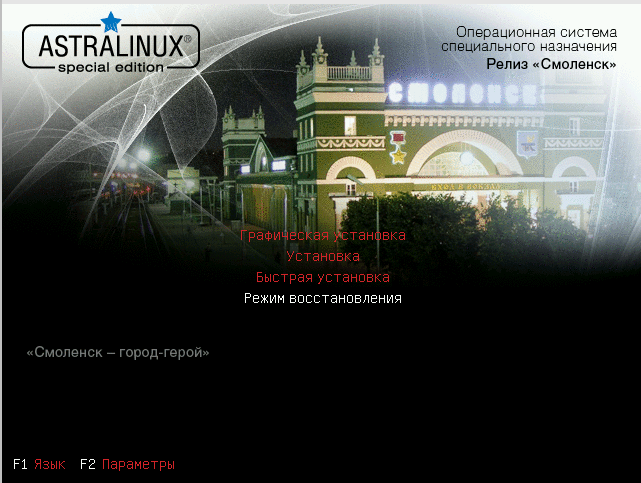
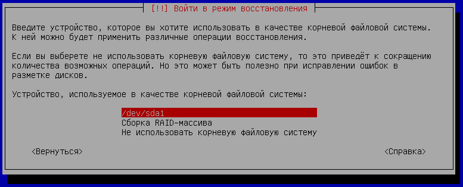
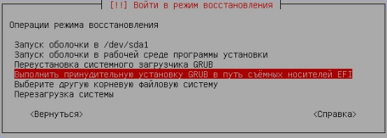
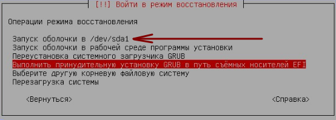

В Astra Linux, как и в любом другом Linux, разработчики совершенно не следят за соответствием компонентов системы друг другу. Зачем тратить на это время? Есть полурабочий пакетный менеджер, вот пусть он разбирается с соответствием зависимостей. Сами зависимости кривые? Пускай тогда пользователь разбирается что там чему не соответсвует. В конце концов, если система будет работать правильно, за что тогда получать зарплату? Нет, система должна постоянно преподносить сюрпризы и требовать квалифицированного обслуживания. Так крутится бизнес.
Обновления Astra Linux 1.6 так же требуют нестандартных действий. Даже если само обновление сработает, велика вероятность того, что одна часть загрузчика Grub обновится на boot-разделе. А другая часть загрузчика, расположенная в начале диска, останется старой. И перейти из rescue-режима в режим загрузки Grub не получится по той простой причине, что старая версия на уровне вызываемых функций несовместима с обновленной частью. Об этом, при выполнении команд перехода в normal-режим, будет говорить следующая ошибка:
error: symbol `grub_calloc` not found
Если так произошло, средствами установленного Grub-а восстановить загрузку не получится. Надо пользоваться дополнительным компакт-диском с утилитами восстановления или загрузочной флешкой.
Итак, надо достать первый установочный диск Astra Linux 1.6, и, если необходимо, сделать из него установочную флешку, например через утилиту Unetbootin. Когда произойдет старт с данного носителя, нужно сделать следующее.
В появившемся меню выбрать пункт "Режим восстановления":

Система потребует принять лицензионное соглашение. Далее запросит клавиши переключения языка ввода. Потом спросит имя компьютера. Вроде как это имя будет использоваться только для сеанса восстановления, если придется работать с сетью. То есть, данная настройка не должна повлиять на существующие настройки сети восстанавливаемой системы.
В конце концов режим восстановления попросит выбрать корневую файловую систему (на нее будет устанавливаться вторая часть Grub). Необходимо выбрать корневой раздел диска с установленной ОС. Здесь возможны два варианта:

Далее возможно два варианта: простая переустановка Grub, если в системе не использовалось загрузка EFI, и переустановка Grub для системы с EFI.
Простая переустановка Grub
Необходимо выбрать пункт "Переустановка системного загрузчика Grub".
Появится окно, в котором необходимо указать устройство для установки системного загрузчика. Имеется в виду, что надо указать место, в которое будет установлена первая (начальная) часть загрузчика Grub. Обычно, это MBR (т. е. главная загрузочная запись) первого диска, например /dev/sda.
После нажатия "Продолжить", обе части Grub-а будут переустановлены, и снова появится окно выбора действия, в котором надо выбрать "Перезагрузка системы".
Переустановка Grub с системой EFI (UEFI)
Возможен вариант, что в системе использовалась загрузка EFI. Тогда на запрос "Монтировать /boot/efi как отдельный раздел" необходимо ответить ДА.
В меню восстановления (при обнаружении EFI), будет показан пункт "Выполнить принудительную установку GRUB в путь съемных носителей EFI". Нужно выбрать именно его, а не "Переустановку системного загрузчика Grub":

После чего необходимо перезагрузиться.
Примечание: в случае с EFI главный системный загрузчик (из MBR) для загрузки ОС не используется. Материнская плата сама считывает VFAT-раздел с EFI-загрузчиками, и передает выбранному в интерфейсе BIOS EFI-загрузчику управление. То есть, главный системный загрузчик, располагаемый в MBR, в этом режиме вообще не используется. Именно поэтому для варианта EFI надо выбирать пункт "Выполнить принудительную установку GRUB в путь съемных носителей EFI" а не "Переустановка системного загрузчика Grub".
Если данное решение не приводит к устранению проблемы необходимо перезагрузиться в режиме восстановления, и проделать те же действия:

В запущенной оболочке выполнить команды:
sudo grub-install
sudo update-grub
Если эти команды невозможно выполнить, то для получения доступа к корневому разделу необходимо вначале выполнить команду:
chroot /target
После окончания установки и обновления параметров, необходимо нажать <Ctrl+D> и перезагрузить ПК.